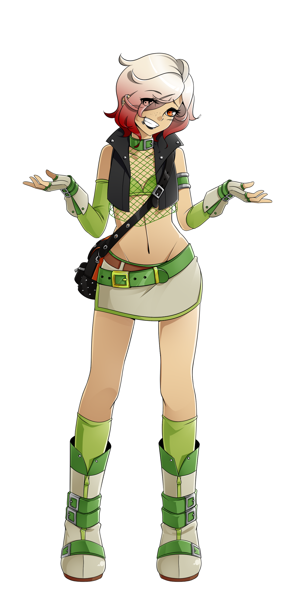
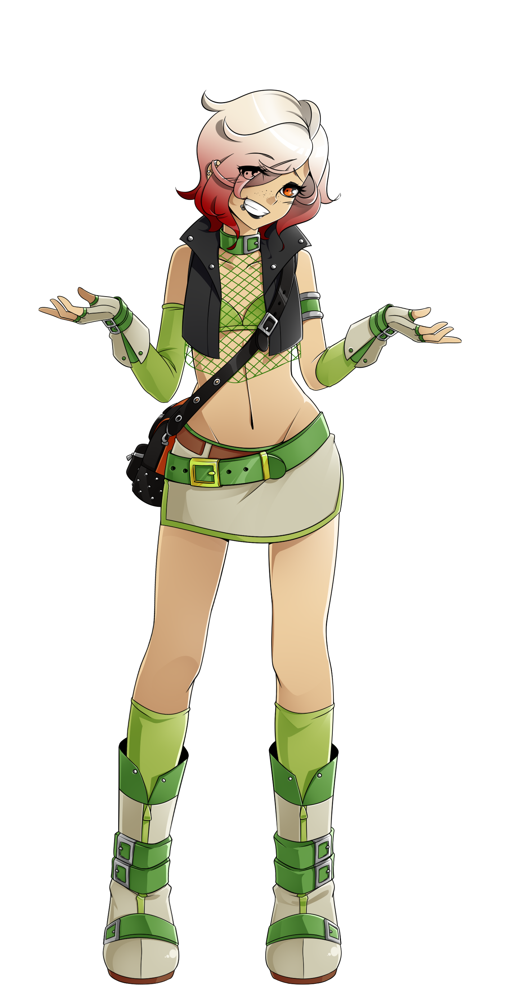

Claris Queis

name: Claris Queis
age: 16
date of birth: 7/27
hair color: platinum blonde with blood red gradient tips
hair style: short and messy with bangs covering right eye
skin tone: tan with dark freckles across her nose
eye color: golden orange
height: 4 ft 11.5 in
ethnicity/race: Latina
citizenship: The Tribal Lands of Vagor
key attribute: effervescent
left-handed
body type: thin
Character Bio/Personality:
Most people mellow as they age. Not Claris.
A curious mix of goth girl and punk rocker, Claris is still an absolute terror of unpredictability and randomness.
A wildcard in any given situation, only two things can be expected from Claris:
she's gonna pick whatever seems the most fun and she's gonna save her friends.